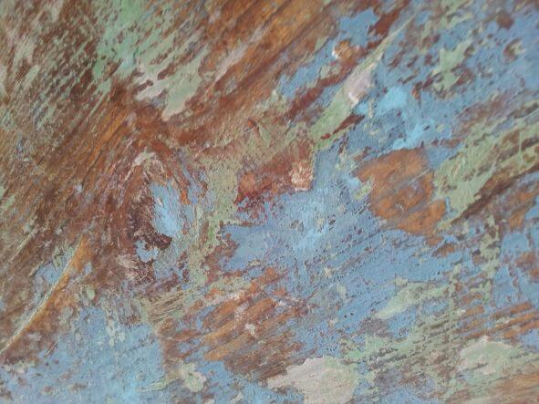

Works
Música Mixta y electrónica
En el alba (aquella que ha nacido con la primera luz) (2010)
Para soprano, electrónica en vivo y electrónica sobre soporte (ca. 13 min). Mención Honrosa en el 4to Concurso Latinoamericano de Composición Electroacústica Gustavo Becerra Schmidt (Chile). Partitura | Grabación
Ante el agua especular (2010)
Para soprano, dos violines, tres voces femeninas, tres voces masculinas, director, gong, electrónica en vivo y sobre soporte fijo (ca. 15 min). Partitura
I am still right here (2012)
Obra electroacústica (ca. 13 min). Grabación
En los abismos (Etüde I) (2013)
Obra electroacústica (ca. 7 min). Grabación
En los abismos II (2013)
Para clavecín y electrónica (ca. 11 min).
Calíope (canto de las abejas) (2014)
Para guitarra y electrónica en vivo. (ca. 9 min). Primer lugar en el Concurso de Composición de Música Electrónica Musikworks 2015 (Canadá). Grabación
Zeitfelder (2018)
Para cuarteto de guitarras y electrónica sobre soporte. (ca. 10 min). Grabación
cap i cua (2019)
Obra electroacústica (ca. 9 min). Grabación
Fluchtpunkt (2021)
Para voz, flauta y electrónica. Obra compuesta para el Ensamble CG (Colombia). Estreno: 5 de marzo de 2022, Festival “En el acto de sonar”. Grabación
χειρονομία (quironomía)[çiɾonoˈmia] (2021)
Para percusionista y Kinect. Obra compuesta por encargo del Percusionista mexicano Eusebio Sánchez (México). Estreno: 22 de septiembre de 2021, Teatro Mayor Julio Mario Santodomingo. Partitura | Video
Instrumentos solistas
“(…) que pasando por los sentidos, imprimieron unas como huellas en el alma” (2007)
Para guitarra eléctrica (ca. 15 min).
Verschleierte Spiegel (2014)
Pieza para violin solo compuesta para el Ensemble Recherche (Alemania) (Proyecto El futuro comienza a las 19:15) (ca. 7 min) Segundo lugar en el concurso de composición New Note 2015 (Samobor, Croacia). Grabación
Música de cámara
Cuatro canciones (2007)
Para voz masculina (barítono) y tres violonchelos (ca. 4 min). 4to lugar en el Concurso Nacional de Composición Musical “La Música: Expresión del Poeta Aurelio Arturo” en 2007.
Todo pasa y todo queda (pero lo nuestro es pasar) (2008)
Para voz femenina, contrabajo y guitarra preparada (ca. 4 min). Partitura | Grabación
Blue sky (bifurcation) (2010)
Para violín, viola, violonchelo y piano (ca. 8 min). Mención en el Premio Nacional de Música en Composición para Jóvenes Compositores 2010.
Retornos (2010)
Para trío vocal masculino (ca. 4 min). Pieza compuesta para el Ensamble Vocal Nonsense (Argentina). Partitura
Keine Gitarre! (2011)
Para guitarra percutida a seis manos (ca. 6 min). Obra compuesta para el Ensamble CLIC (Colombia). Partitura | Video
Pieza para chatarra No. 1 (2011)
Para chatarrófono (ca. 9 min). Obra compuesta para el Ensamble CLIC (Colombia).
Y entonces quisiera no haber oído ese canto (2012)
Para dueto de percusión (ca. 12 min).
… y los delirios, otra razón (2012)
Fijeza (2012)
Para dos voces y dos guitarras (ca. 8 min) Pieza compuesta para el Cuarteto Alere (Colombia). Partitura
Away, a wave a way. (2015)
Para ensamble mixto de 15 instrumentos. Pieza compuesta durante la Residencia Artística en la Künstlerhaus Schloss Wiepersdorf (Alemania) en 2014. Partitura | Grabación
Estados vibracionales (2022)
Para ensamble mixto de 9 instrumentos. Dedicada al Ensamble Vasto (Colombia). Estreno: 8 de febrero de 2022 por el Ensamble Vasto en el Teatro Mayor Julio Mario Santodomingo.
Instrumentación indeterminada
Climenole (2007)
Para dos intérpretes y director (duración indeterminada).